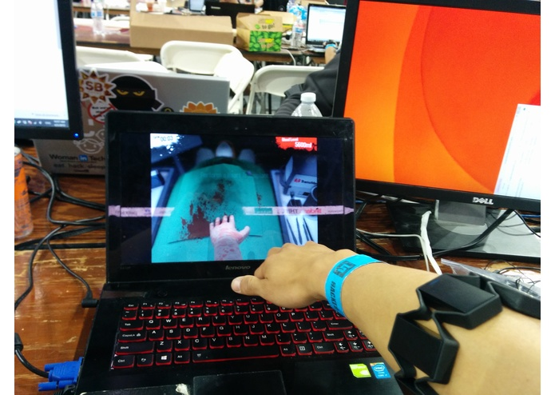
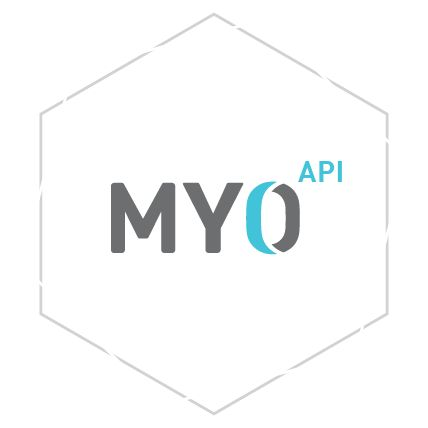

I created MyoSurgicalSim during LA Hacks 2015. I integrated the classic comical game Surgical Sim with Myo's gesture control armband. With this script, you are now able to become fully immersed in the most awkward and clumsy surgical process.
Check out the public repo here!
Technologies
